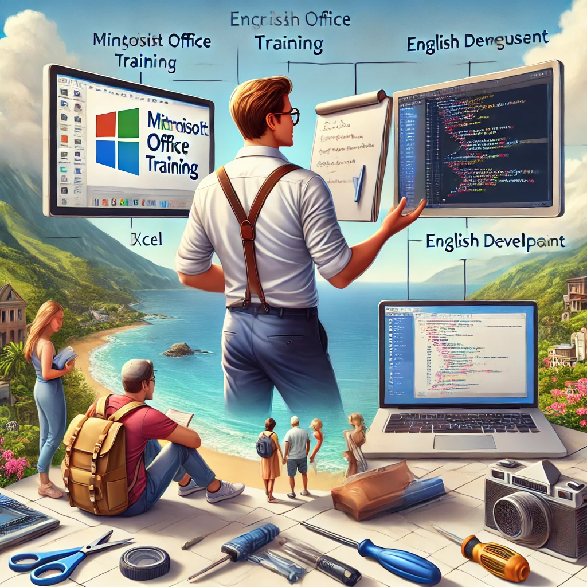
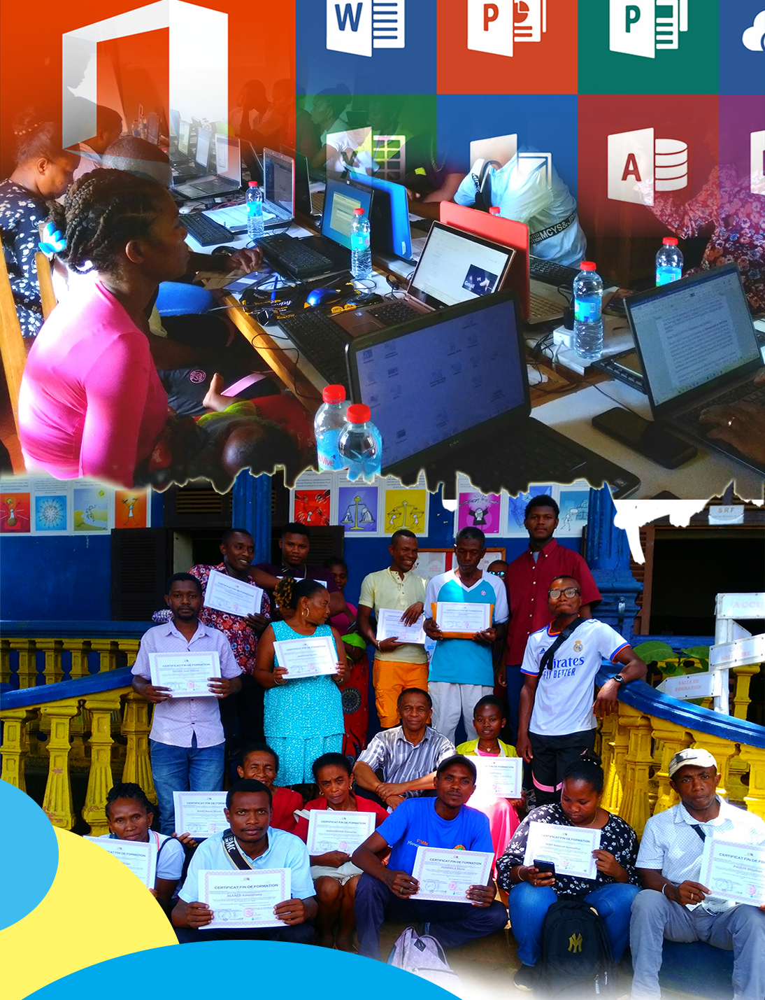

Service de Maintenance Systèmes : Windows et Linux
J’offre un service complet de dépannage et de maintenance
pour vos systèmes Windows et Linux, pour assurer leur performance et leur stabilité :

Réparation de démarrage:
Assistance pour les systèmes qui ne démarrent pas correctement,
Avec des solutions rapides pour rétablir l’accès et les fonctionnalités.
Optimisation de la performance :
Nettoyage et optimisation pour un fonctionnement fluide, En éliminant les fichiers inutiles
en désactivant les programmes non essentiels et en vérifiant la sécurité du système.
Résolution des erreurs système :
Intervention sur les erreurs comme les écrans bleus (BSOD) sur Windows
les problèmes de démarrage et de dépendances de paquets sur Linux.
Mise à jour et gestion des dépendances :
Gestion des mises à jour et des installations pour les logiciels et pilotes
incluant la correction des dépendances pour les paquets Linux.
Assistance réseau et connectivité :
Diagnostic et réparation des problèmes de connexion, que ce soit pour des configurations Wi-Fi, des réseaux locaux ou des accès à distance.
Ces services visent à garantir la fiabilité de votre système informatique,
en vous offrant une assistance rapide et des solutions adaptées à vos besoins,
pour Windows comme pour Linux.
Formation Microsoft Office en salle
 Formation Word :
Mise en page :Apprenez à structurer vos documents pour une présentation claire et soignée, en ajustant marges, en-têtes, pieds de page et numérotation.
Table des matières automatique :Créez et gérez une table des matières dynamique pour des rapports et documents longs.
Styles et formats de texte : Utilisez efficacement les styles pour uniformiser la mise en forme de vos titres, sous-titres et paragraphes.
Insertion d'éléments multimédias : Intégrez des images, graphiques, et tableaux pour enrichir le contenu de vos documents.
Formation Excel :
Calculs et formules :Apprenez les formules de base et avancées (somme, moyenne, recherche, etc.) pour des calculs rapides et précis.
Création de factures automatisées : Concevez des modèles de factures qui se mettent à jour automatiquement avec les données.
Gestion de bases de données :Organisez, filtrez, et triez des données pour une analyse efficace.
Visualisation de données : Créez des graphiques pour interpréter visuellement vos données et prendre des décisions informées.
Formation PowerPoint :
Création de diapositives professionnelles :Apprenez à structurer et à organiser vos idées de manière efficace et attrayante.
Animation et transitions:Utilisez des effets pour captiver votre audience et rendre votre présentation plus dynamique.
Incorporation de multimédias :Intégrez des images, vidéos et graphiques pour illustrer vos messages.
Techniques de présentation:Conseils pour maîtriser vos prises de parole et garder l'attention du public.
Formation Publisher :
Création de brochures et flyers : Apprenez à concevoir des supports visuels professionnels pour la promotion d’événements ou de services.
Mise en page avancée : Utilisez des outils de mise en page pour un agencement soigné et harmonieux des textes et images.
Conception de cartes de visite et affiches:Créez des documents percutants pour des usages personnels ou professionnels.
Publication pour impression : Préparez vos créations pour une impression de haute qualité.
Ces services visent à garantir la fiabilité de votre système informatique,
en vous offrant une assistance rapide et des solutions adaptées à vos besoins,
pour Windows comme pour Linux.
Cours Microsoft Office , du développement web et Photoshop à Domicile
Je propose des cours particuliers personnalisés pour vous aider à maîtriser les logiciels Microsoft Office,
développement web et Photoshop à Domicile, Confort et flexibilité en apprenant depuis chez vous ou chez-moi.
 Sur Photoshop
Sur Photoshop
- Bases de Photoshop : Introduction à l'interface, aux outils essentiels, et aux concepts de calques, masques et filtres..
- Retouche photo professionnelle : Techniques pour améliorer la qualité d’image, retoucher les couleurs, la luminosité, et affiner les détails.
- Montage photo et création de compositions : Assemblage de plusieurs images, intégration d’éléments visuels et création de compositions complexes..
- Effets et filtres créatifs : Utilisation des effets et des filtres pour donner un style unique à vos images.
- Conception de flyers, affiches et supports publicitaires : Création de supports de communication adaptés aux réseaux sociaux, à l’impression et au digital.
- HTML (HyperText Markup Language) : Introduction aux structures de base d’un site web, aux balises et à la création de contenu..
- CSS (Cascading Style Sheets) : Apprentissage de la mise en forme, de la mise en page et des styles pour personnaliser l’apparence de vos pages web..
- JavaScript : Introduction aux concepts fondamentaux de la programmation pour rendre vos sites interactifs et dynamiques..
- Bootstrap : Utilisation de ce framework CSS pour concevoir des sites réactifs et modernes rapidement et efficacement..
Ce que je propose :
- Utilisation d’Excel pour l'analyse de données.
- de PowerPoint pour des présentations impactantes,
- de Word pour la rédaction de documents professionnels..
- de Publisher pour des créations visuelles...
Pourquoi me choisir ?
En tant que formateur expérimenté, je m'assure que chaque leçon soit pratique, interactive, et adaptée à votre niveau pour garantir une progression rapide et efficace.